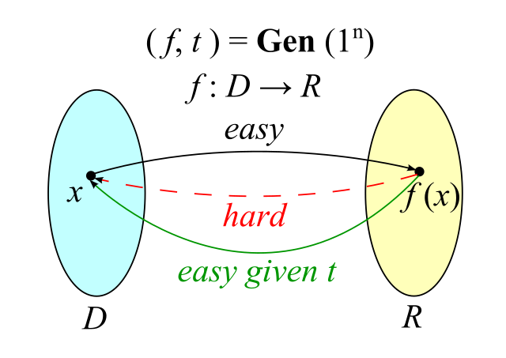
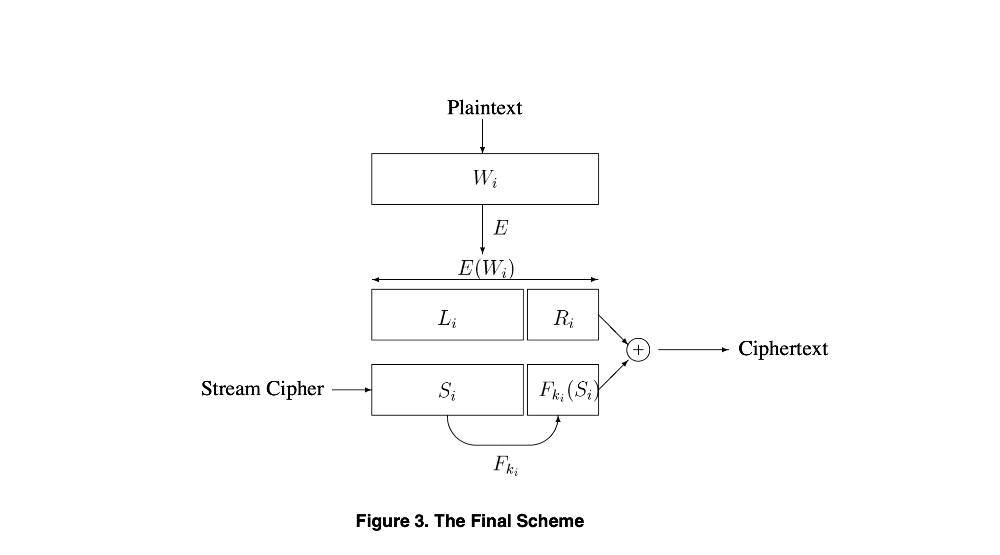

可检索加密方案
最近在业务需求下设计一个相对安全、可靠的加密算法，业务场景为
- 根据明文字符串$P_{{i}}$生成可检索密文$C_{{i}}$
- 密文$C_{i}$保存在第三方；
- 用户随机输入原明文字符串中的字符组合$W_{{r}}$获得其对应的密文串$C_{{r}}$；
- 将密文串$C_{{r}}$提交至第三方，第三方从多个密文串中搜索哪一个密文串对应的明文包含字符组合$W_{{r}}$。
第一眼看到这个需求的反应是该需求是典型的可检索加密，但目前真正将可检索加密在现实落地且有成熟实践的公司寥寥无几，目前可检索加密相对而言还是停留在论文阶段。在该场景下做可检索加密demo验证时发现公司内关于该算法的资料很少，所以整理自己依据真实需求设计可检索加密时相关内容做分享。
常规加密存储方案
目前大部分厂商针对数据安全诉求采取的加解密方案还是强依赖明文和密文的映射关系，主要有两种方案
- 明文$P_{{i}}$加密后生成一组密文$C_{{i}}$和不重复uuid/token的映射关系，业务侧后续业务逻辑中如使用明文则根据密文解密处理。
- 业务侧对安全方案不感知，在数据库proxy侧做明文$P_{{i}}$、密文$C_{{i}}$的加密解密处理。
目前加密内容大部分均是身份证号、手机号等PII相关的信息，该敏感信息和userId为一对一、多对一的映射关系，且在业务代码侧有强权限控制，目前的加密存储方案可以适应该场景。
方案的缺陷点
- DA同学或数据分析场景不友好，例如：需要根据业务加密库中的身份证字段判断客户的地区分析，在目前全密文的场景下数据分析的途径只能是对全量数据解密后再分析，其中会涉及大量的网络、存储资源开销。
- 目前密文数据均存储在可信环境下，但如果密文存储在第三方不可控且不能将将解密函数提供给第三方的情况下如何实现检索。
可检索加密方案
可检索加密方案流程图如文章开始的业务场景相似
- 根据明文字符串$P_{{i}}$生成可检索密文$C_{i}$；
- 密文$C_{i}$保存在第三方；
- 用户随机输入原明文字符串中的字符组合$W_{{r}}$获得其对应的密文串$C_{{r}}$；
- 将密文串$C_{{r}}$提交至第三方，第三方从多个密文串中搜索哪一个密文串对应的明文包含字符组合$W_{{r}}$。
关键概念-陷门函数（Trapdoor Function\TDF）
用wikipedia上对TDF使用的一张图片可以做更好的解释

- 陷门是一个转换函数输入空间为$D$、输出空间为$R$，即$f:D$ -> $R$
- 这张图中其实包含一个单向函数，即根据输入$x$可以简单的计算出输出$f(x)$，但是如果我们根据输出$f(x)$要计算得到输入$x$则非常困难
- 但是与单向函数相比额外的一点是，如果给定$t$，可以非常简单的根据输出$f(x)$计算获得输入$x$。即在生成一个TDF实例时额外增加一个TDF的陷门$t$:
- 如果$t$在不知晓的情况下原本的TDF是一个单向函数
- 但如果$t$知晓后可以打破TDF的单向性，可以根据$f(x)$获得输入$x$
TDF在密码学中被大量应用
- 如RSA加密算法就是基于RSA的一个TDF
- Merkle’s Puzzles密钥交换协议也是TDF的一个体现
验证可搜索加密SWP可行性
根据Dawn Xiaoding Song; D. Wagner; A. Perrig的论文1</suo>做理论支持，尝试现实demo验证特定场景下的可检索加密方案的可行性。
文章中列举了四种方案：
- Scheme I: The Basic Scheme
- Scheme II: Controlled Searching
- Scheme III: Support for Hidden Searches
- Scheme IV: The Final Scheme
使用作者认为相对成熟、可靠的Scheme IV: The Final Scheme做方案验证

方案的迭代均是在上一个方案缺陷点的基础上对应补充，Scheme IV: The Final Scheme的流程可以抽象为：
加密流程
- 对明文字符串基于NLP做词法/语法分词产生关键词组合$W_{{i}}$
- 使用含密钥且算法确定的加密算法对$W_{{i}}$做加密运算得到$X_{{i}} = E(W_{{i}})$
- 将$X_{{i}}$做bit划分，$X_{{i}}$ = $
- 使用带密钥的hash函数$Hash_{{1}}$对$L_{{i}}$做hash运算，得到新的密钥 $k_{{i}} = f_{{k'}}(L_{{i}})$
- 使用种子为$seed$的随机函数得到随机序列$S_{{i}}$
- 使用带密钥的hash函数$Hash_{{2}}$对$S_{{i}}$做hash运算，得到$F_{{k_{{i}}}}$
- 将$S_{{i}}$和$F_{{k_{{i}}}}$拼接后与$X_{{i}}$做异或运算得到最后的密文$C_{{i}}$ = $(
检索流程
- 用户需要提交关键词$W_{{i}}$对应的$X_{{i}}$已经经过hash运算的$k_{{i}}$
- 密文service侧对$X_{{i}}$和密文$C_{{i}}$做异或得到$T_{{i}}$ = $X_{{i}}$ $\bigoplus$ $C_{{i}}$
- 如加密流程中对$T_{{i}}$做截取拆分，$T_{{i}}$ = <$T_{{i}}L$, $T_{{i}}R$>
- 使用加密流程中的$Hash_{{2}}$函数以${k_{{i}}}$为密钥对$T_{{i}}L$做hash运算，如果$Hash_{{2}}($T_{{i}}L$)$ == $T_{{i}}L$则认为检索成功。
验证代码
1 | public static void main(String[] args) throws Exception { |
总结
SWP可检索加密方案使用场景
- 敏感长字符串/大文件加密存储，需要判断用户关心的关键词所在的密文字段，然后以相对较小的成本有针对性获取密文。
局限性
- 加密前需要预先知道用户关心的关键词组合并在加密时设置陷门以支持检索，对用户随便输入的不在预先设置陷门的组合的字符不支持搜索。
- 如果支持同一个关键词在多个密文文件中检索，则加密流程中的密钥需要相同而带来的选择明文攻击无法解决。
SWP方案有其理念的先进性但还是要结合相对应的场景做适配。